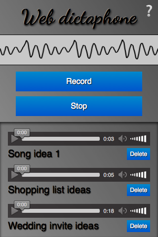

The MediaRecorder API is a simple construct, used with Navigator.getUserMedia(), which provides an easy way of recording media streams from the user's input devices and instantly using them in web apps, rather than having to perform manual encoding operations on raw PCM data, etc., which would be required when using getUserMedia() alone. This article aims to provide a basic guide on how to use MediaRecorder.
A sample application: Web Dictaphone

To demonstrate basic usage of the MediaRecorder API, we have built a web-based dictaphone. It allows you to record snippets of audio and then play them back. It even gives you a visualization of your device's sound input, using the Web Audio API. We'll concentrate on the recording and playback functionality for this article.
You can see this demo running live, or grab the source code on Github (direct zip file download.)
Note: The MediaRecorder API currently only works on Firefox (desktop/mobile) 25 and above, and Firefox OS 2.0.
CSS goodies
The HTML is pretty simple in this app, so we won't go through it here; there are a couple of slightly more interesting bits of CSS worth mentioning, however, so we'll discuss them below. If you are not interested in CSS and want to get straight to the JavaScript, skip to the Basic app setup section.
Keeping the interface constrained to the viewport, regardless of device height, with calc()
The calc() function is one of those useful little utility features that's cropped up in CSS that doesn't look like much initially, but soon starts to make you think "Wow, why didn't we have this before? Why was CSS2 layout so awkward?" It allows you do a calculation to determine the computed value of a CSS unit, mixing different units in the process.
For example, in Web Dictaphone we have theee main UI areas, stacked vertically. We wanted to give the first two (the header and the controls) fixed heights:
header {
height: 70px;
}
.main-controls {
padding-bottom: 0.7rem;
height: 170px;
}
However, we wanted to make the third area (which contains the recorded samples you can play back) take up whatever space is left, regardless of the device height. Flexbox could be the answer here, but it's a bit overkill for such a simple layout. Instead, the problem was solved by making the third container's height equal to 100% of the parent height, minus the heights and padding of the other two:
.sound-clips {
box-shadow: inset 0 3px 4px rgba(0,0,0,0.7);
background-color: rgba(0,0,0,0.1);
height: calc(100% - 240px - 0.7rem);
overflow: scroll;
}
Note: calc() has good support across modern browsers too, even going back to Internet Explorer 9.
Checkbox hack for showing/hiding
This is fairly well documented already, but we thought we'd give a mention to the checkbox hack, which abuses the fact that you can click on the <label> of a checkbox to toggle it checked/unchecked. In Web Dictaphone this powers the Information screen, which is shown/hidden by clicking the question mark icon in the top right hand corner. First of all, we style the <label> how we want it, making sure that it has enough z-index to always sit above the other elements and therefore be focusable/clickable:
label {
font-family: 'NotoColorEmoji';
font-size: 3rem;
position: absolute;
top: 2px;
right: 3px;
z-index: 5;
cursor: pointer;
}
Then we hide the actual checkbox, because we don't want it cluttering up our UI:
input[type=checkbox] {
position: absolute;
top: -100px;
}
Next, we style the Information screen (wrapped in an <aside> element) how we want it, give it fixed position so that it doesn't appear in the layout flow and affect the main UI, transform it to the position we want it to sit in by default, and give it a transition for smooth showing/hiding:
aside {
position: fixed;
top: 0;
left: 0;
text-shadow: 1px 1px 1px black;
width: 100%;
height: 100%;
transform: translateX(100%);
transition: 0.6s all;
background-color: #999;
background-image: linear-gradient(to top right, rgba(0,0,0,0), rgba(0,0,0,0.5));
}
Last, we write a rule to say that when the checkbox is checked (when we click/focus the label), the adjacent <aside> element will have it's horizontal translation value changed and transition smoothly into view:
input[type=checkbox]:checked ~ aside {
transform: translateX(0);
}
Basic app setup
To grab the media stream we want to capture, we use getUserMedia() (gUM for short). We then use the MediaRecorder API to record the stream, and output each recorded snippet into the source of a generated <audio> element so it can be played back.
First, we'll add in a forking mechanism to make gUM work, regardless of browser prefixes, and so that getting the app working on other browsers once they start supporting MediaRecorder will be easier in the future.
navigator.getUserMedia = ( navigator.getUserMedia ||
navigator.webkitGetUserMedia ||
navigator.mozGetUserMedia ||
navigator.msGetUserMedia);
Then we'll declare some variables for the record and stop buttons, and the <article> that will contain the generated audio players:
var record = document.querySelector('.record');
var stop = document.querySelector('.stop');
var soundClips = document.querySelector('.sound-clips');
Finally for this section, we set up the basic gUM structure:
if (navigator.getUserMedia) {
console.log('getUserMedia supported.');
navigator.getUserMedia (
// constraints - only audio needed for this app
{
audio: true
},
// Success callback
function(stream) {
},
// Error callback
function(err) {
console.log('The following gUM error occured: ' + err);
}
);
} else {
console.log('getUserMedia not supported on your browser!');
}
The whole thing is wrapped in a test that checks whether gUM is supported before running anything else. Next, we call getUserMedia() and inside it define:
- The constraints: Only audio is to be captured; MediaRecorder only supports audio currently anyway.
- The success callback: This code is run once the
gUMcall has been completed successfully. - The error/failure callback: The code is run if the
gUMcall fails for whatever reason.
Note: All of the code below is placed inside the gUM success callback.
Capturing the media stream
Once gUM has grabbed a media stream successfully, you create a new Media Recorder instance with the MediaRecorder() constructor and pass it the stream directly. This is your entry point into using the MediaRecorder API — the stream is now ready to be captured straight into a Blob, in the default encoding format of your browser.
var mediaRecorder = new MediaRecorder(stream);
There are a series of methods available in the MediaRecorder interface that allow you to control recording of the media stream; in Web Dictaphone we just make use of two. First of all, MediaRecorder.start() is used to start recording the stream into a blob once the record button is pressed:
record.onclick = function() {
mediaRecorder.start();
console.log(mediaRecorder.state);
console.log("recorder started");
record.style.background = "red";
record.style.color = "black";
}
When the MediaRecorder is recording, the MediaRecorder.state property will return a value of "recording".
Second, we use the MediaRecorder.stop() method to stop the recording when the stop button is pressed, and finalize the Blob ready for use somewhere else in our application.
stop.onclick = function() {
mediaRecorder.stop();
console.log(mediaRecorder.state);
console.log("recorder stopped");
record.style.background = "";
record.style.color = "";
}
When recording has been stopped, the state property returns a value of "inactive".
Note that there are other ways that a Blob can be finalized and ready for use:
- If the media stream runs out (e.g. if you were grabbing a song track and the track ended), the blob is finalized.
- If the
MediaRecorder.requestData()method is invoked, the blob is finalized, but recording then continues in a new blob. - If you include a timeslice property when invoking the
start()method — for examplestart(10000)— then a new blob will be finalized (and a new recording started) each time that number of milliseconds has passed.
Grabbing and using the blob
When the blob is finalized and ready for use as described above, a dataavailable event is fired, which can be handled using a mediaRecorder.ondataavailable handler:
mediaRecorder.ondataavailable = function(e) {
console.log("data available");
var clipName = prompt('Enter a name for your sound clip');
var clipContainer = document.createElement('article');
var clipLabel = document.createElement('p');
var audio = document.createElement('audio');
var deleteButton = document.createElement('button');
clipContainer.classList.add('clip');
audio.setAttribute('controls', '');
deleteButton.innerHTML = "Delete";
clipLabel.innerHTML = clipName;
clipContainer.appendChild(audio);
clipContainer.appendChild(clipLabel);
clipContainer.appendChild(deleteButton);
soundClips.appendChild(clipContainer);
var audioURL = window.URL.createObjectURL(e.data);
audio.src = audioURL;
deleteButton.onclick = function(e) {
evtTgt = e.target;
evtTgt.parentNode.parentNode.removeChild(evtTgt.parentNode);
}
}
Let's go through the above code and look at what's happening.
First, we display a prompt asking the user to name their clip.
Next, we create an HTML structure like the following, inserting it into our clip container, which is a <section> element.
<article class="clip"> <audio controls></audio> <p>your clip name</p> <button>Delete</button> </article>
After that, we create an object URL pointing to the event's data attribute, using window.URL.createObjectURL(e.data): this attribute contains the Blob of the recorded audio. We then set the value of the <audio> element's src attribute to the object URL, so that when the play button is pressed on the audio player, it will play the Blob.
Finally, we set an onclick handler on the delete button to be a function that deletes the whole clip HTML structure.
Specifications
| Specification | Status | Comment |
|---|---|---|
| MediaStream Recording | Working Draft | Initial definition |
Browser compatibility
| Feature | Chrome | Firefox (Gecko) | Internet Explorer | Opera | Safari (WebKit) |
|---|---|---|---|---|---|
| Basic support | Not supported | 25.0 (25.0) | Not supported | Not supported | Not supported |
| Feature | Android | Firefox Mobile (Gecko) | Firefox OS | IE Phone | Opera Mobile | Safari Mobile |
|---|---|---|---|---|---|---|
| Basic support | Not supported | 25.0 (25.0) | 1.3[1] | Not supported | Not supported | Not supported |
[1] The intial Firefox OS implementation only supported audio recording.
See also
- MediaRecorder API landing page
Navigator.getUserMedia()